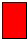
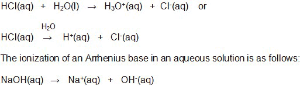
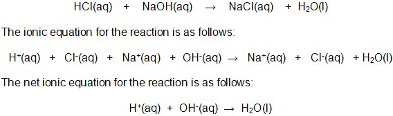
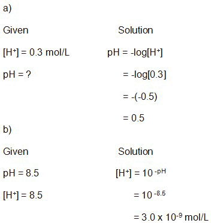

Unit 4: Solutions and Solubility
Activity 3: Reacting to a Solution
Content
Journal

|
As you are reading through this activity, keep track and take note of the bold-faced terms and their definitions. Include your own understanding of these terms in your notes. Also, pay close attention to the solutions to any special types of reactions. You will need your calculator. Please note that your teacher may require you to submit your journal at a later date. |
|---|
Acids and Bases
Early acid-base theories were based on the exhibited properties of acids and bases.
Litmus paper turns red in an acid:  and blue in a base: .
In later years, acids and bases were categorized according to their reactions.
In 1884, Svante Arrhenius, a Swedish chemist, discovered that a dissolved substance that dissociates into electrically charged ions in a solution produces an electrolyte. He was awarded a Nobel Prize for chemistry in 1903 for this work. Aqueous solutions of acids and bases were found to ionize and conduct electricity and were considered to be electrolytes.
According to the Arrhenius theory of acids and bases, the ionization of a substance that produces an H+ ion is considered to be an Arrhenius acid. The ionization of a substance that produces a hydroxide ion, OH-, is considered to be an Arrhenius base.
The ionization of an Arrhenius acid can be shown two ways:

There are substances that are considered to be acids or bases even though the formula seems to suggest that they are neutral. Aluminum nitrate, Al(NO3)3 produces an acidic solution. Ammonia, NH3, produces ammonium hydroxide.
Therefore, the revised Arrhenius theory states that:
* an Arrhenius acid is a substance which ionizes in water to produce an increase in hydronium ions;

|
Watch the interactive simulation HCl(aq - an HCl collides with a water molecule. Please be aware, that, depending on your Internet connection speed, all clips on this page may take a few minutes to download. You can always continue reading the remainder of this page while you wait. |
|---|
And,
* an Arrhenius base is a substance which ionizes in water to produce an increase in hydroxide ions.
|
|
Watch the interactive simulation NH3(aq) - equilibrium system ... but please be aware, that, depending on your Internet connection speed, all clips on this page may take a few minutes to download. You can always continue reading the remainder of this page while you wait. |
|---|
After watching the two videoclips, it appears that hydrochloric acid almost completely (>99%) ionizes in water and ammonia only partially (<50%) ionizes in water. Hydrochloric acid is considered to be a strong acid along with the following: hydrobromic acid, HBr; hydroiodic acid, HI; nitric acid, HNO3, perchloric acid, HClO3, and sulphuric acid, H2SO4. All other acids are considered to be weak acids. Strong bases include the hydroxides of the alkali metals: LiOH, NaOH, KOH, RbOH and CsOH. The hydroxides of the alkaline-earth metals: Mg(OH)2, Ca(OH)2 and Ba(OH)2 are considered to be strong, too.
Weak acids and bases partially ionize.
Neutralization
An acidic solution has a pH < 7. An alkaline solution has pH > 7. A neutral solution has a pH = 7.
 Questions
Questions
- What is the name of a reaction when an acid reacts with a base to produce a pH of 7?
 Answer
Answer
|
|
Watch the interactive simulation Reaction of HCl with NaOH (HCl - NaOH titration). Please be aware, that, depending on your Internet connection speed, all clips on this page may take a few minutes to download. You can always continue reading the remainder of this page while you wait. |
|---|
The chemical equation representing the reaction between hydrochloric acid and sodium hydroxide is expressed as such:

pH
The pH value of a solution is determined by the following formula:
pH = -log[H+]
The concentration of the H+ ion can be determined by using the following formula:
[H+] = 10 -pH
Note the following: pH values have no units and the units of concentration are mol/L.
 Example
Example
a) Find the pH of a solution with [H+] = 0.3 mol/L; and
b) Calculate [H+] if the pH is 8.5.
 Sample Solution
Sample Solution


|
To learn more about the concepts in this activity, visit these websites: Chemistry Rules! |
|---|
This is a disclaimer. External Resources will open in a new window. Not responsible for external content.
Unless otherwise indicated, all images in this Activity are from the public domain or are © clipart.com or Microsoft clipart and are used with permission.